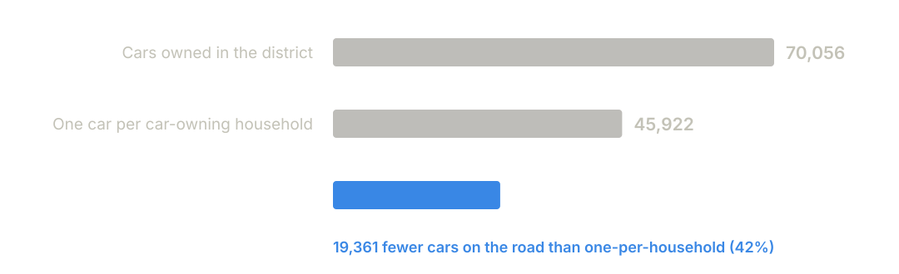
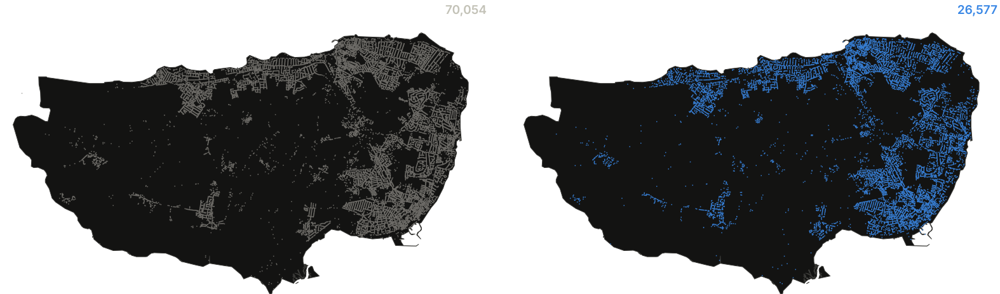
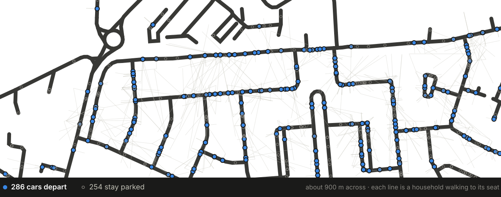
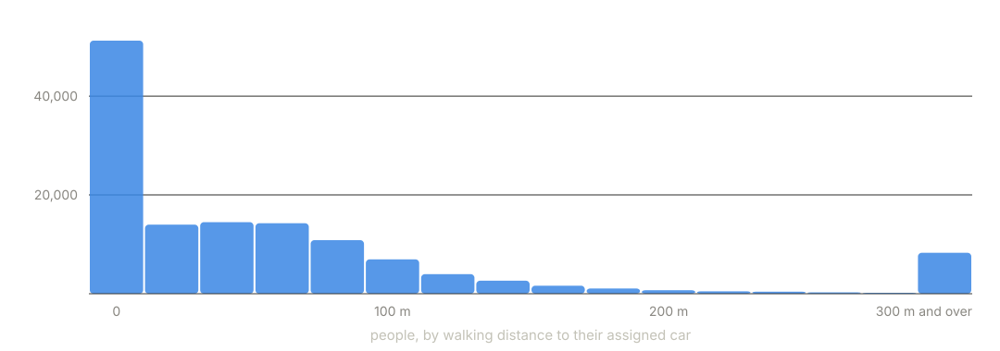
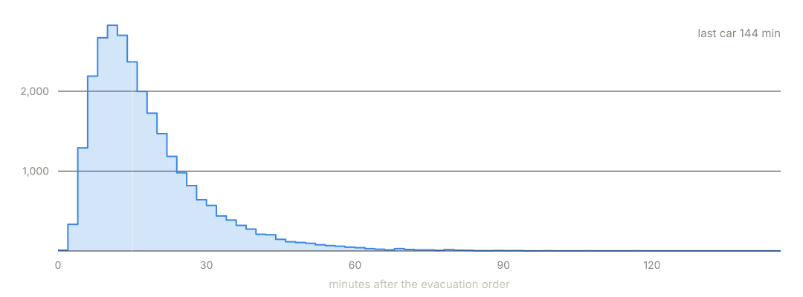

Hackathon build · Thanet District, Kent · LAD E07000114
Getting 138,676 people out
A synthetic population, a car-pooled evacuation plan and a runnable
traffic scenario — built from open data, for any council district
in England and Wales.
The problem
Thanet is nearly an island. There are four ways off it.
138,676
people in 62,149 households
70,054
cars owned across the district
4
road corridors leaving the district
Tell everyone to drive and 45,928 cars — one per
car‑owning household — converge on four roads. Nobody plans
an evacuation at household level, because nobody has the household
data to plan it with.
persons · households · vehicles · district_exits
What we built
Open data in, an executable plan out
01
Synthesise the population
Census 2021 Output Area marginals (TS003, TS007, TS008, TS017, TS038, TS045) via NOMIS → 138,676 people with age, sex, licence, mobility
02
Put them at real addresses
93,875 OS Open UPRN points → every household at a real front door
03
Park every car
OpenStreetMap centrelines → each car snapped to a kerbside spot. That spot is the muster point
04
Seat everybody
Families kept together, walk capped at 10 minutes, the housebound collected from home
05
Route and time it
Nearest qualifying exit, departure drawn per car from a mobilisation curve
06
Export a simulation
A MATSim scenario: 131,420 plans, 26,577 vehicles, ready to run
31 Dagster assets over one DuckDB warehouse. Every stage is queryable,
every threshold is named in one config file, 164 tests pass.
The result
26,577 cars, not 45,928

Neighbours ride together, so 42% fewer vehicles queue for the same
four exits. A car is only started if somebody is in it, and every
driver is the owner of the car they drive — no key handovers.
4.94
people per departing car, out of five seats
98%
of departing cars leave completely full
layer_oa_summary · report_seat_utilisation
The same district, planned two ways
Every car, and the ones that move

Each mark is one car at the kerbside spot it is parked in — not a
zone, not a centroid. The right-hand map is what the road network
actually sees.
The idea that makes it work
The muster point is a parked car

No church halls, no car parks, no assembly points to staff, nothing to
stand up on the day. Every household is sent to a car that is already
parked on its street — and the plan names which one.
layer_fleet · arc_walks · road_centrelines
Is it a plan people would actually follow?
Half of everybody walks under 35 metres

Usually a few doors down. The ceiling is a walking time,
not a distance — ten minutes at 4.8 km/h, measured on the
pedestrian network rather than as the crow flies.
13,352 households can't walk to anyone: those are
collected from home, at most three stops per car.
113,897 travel groups stay together — 15 are
split.
person_walks · route_stops · travel_groups
The plan has a clock
Departures, not a departure

Each car draws its own delay between the order going out and being
ready to move — lognormal, right‑skewed, because it is the
tail that governs clearance, not the median. Add the driver's own walk
to the car and the fleet leaves over two and a half hours.
The median and spread are provisional and flagged as such:
recalibrating them against evacuation-response literature changes one
config value and no code.
What it enables
It ends as something you can run
MATSim scenario
Contents
population.xml.gz
131,420 plans
vehicles.xml.gz
26,577 cars
households.xml.gz
62,149 households
config.xml
EPSG:27700, runnable
Drivers get a car leg, passengers a ride
leg, so the vehicles entering the network are exactly the cars that
depart — the quantity the whole comparison rests on. Locations
bind to OSM way ids, which survive a network rebuild; link ids don't.
So you can ask, and answer:
Does pooling actually clear the district faster, or just move the queue?
What happens if the Ramsgate Road corridor is closed?
How much worse is a 30-minute mobilisation median than a 15-minute one?
Which streets need a marshal, and which look after themselves?
Run the baseline and the pooled scenario against the same network
with the same seed, and the difference is the policy.
What it enables
Change one line, plan another district
Nothing about Thanet is hard-coded. Every source is national:
Census marginals, OS Open UPRN, OpenStreetMap.
lad_code = "E07000114" is the only edit needed to
target any of the 331 districts in England and Wales. Seeded draws
make a run reproducible — same seed, same population.
And every assumption is a dial, not a literal
Seats per car — 5
Walking ceiling — 10 minutes
Collection stops per car — 3
Mobilisation median — 15 minutes
Minimum occupancy to activate a car — 1
No threshold — capacity, distance, age, speed, time —
appears as a number inside an algorithm. If it matters, it is named
in one file and a planner can argue with it.
config.py
Being honest
What this cannot tell you
7,256 people have no seat — 5.2%. Almost all of them are in areas where every nearby car is already full. Failure has a postcode, and it's in the export.
Exits are infinite sinks. The road network stops at the district boundary, so nothing queues on the A299 beyond it. Any clearance time from this is optimistic.
90% of the fleet is sent to one corridor because vehicles head for the nearest exit, with no destination choice.
Care homes and halls are missing. The population is the household population — 1,950 people short, and exactly the people most likely to need collecting.
24% of under-16s have no plausible co-resident parent, because attributes are paired independently across marginals.
The animated map is schematic — straight lines, nominal timings, no congestion. It shows structure, never duration.
All six are measured and published by the pipeline itself, in
report_data_quality, unmet_demand and
scenario_shortfalls — not discovered afterwards.
Built this hackathon
From census table to running simulation
26,577
cars instead of 45,928
131,420
people with a named seat in a named car
1
config value to plan the next district
uv run dagster dev materialises the lot ·
npm run dev in viz/ opens the live map ·
figures in this deck regenerate from the warehouse with
uv run python deck/make_figures.py